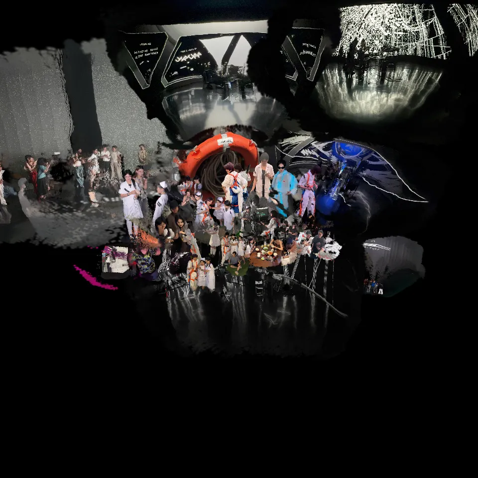

Series
Drop Flow
作为系列核心，它把实时音画、空间迁移和数字自然叙事放进同一条作品线。
空间生成 / 实时音画 / 沉浸式图像 / 感知迁移
Drop Flow 是围绕空间生成、实时音画互动、身体表演与图像外溢展开的长期系列。它不把影像只看作屏幕内容，而是把声音、身体、观看位置、空间尺度和显示介质一起组织成可进入的状态。
Drop Flow 更接近一个持续演化的作品线：从实时音画原型，到创作营现场、空间样本、公共展陈与后续空间计算路径。
作为系列核心，它把实时音画、空间迁移和数字自然叙事放进同一条作品线。

创作营与现场实验版本，强调实时生成、声音反馈和现场环境之间的关系。

沉浸式大屏、身体表演与 VR 头显内容共同构成的公共呈现版本。

把团队阶段素材组织成可浏览的空间样本，作为视频之外的进入方式。

带有奖项背书的城市扫描与空间叙事实践，并延伸到 Apple Vision Pro 的呈现路径。
先从现场录像进入，再回到系列版本和空间样本。
Drop Flow 的一部分材料被整理为可浏览的空间对象，用来承接网页展示、空间观看和后续 XR 路径。
这个空间样本来自 Drop Flow 团队项目阶段素材。它把成员影像、现场资料和拼贴结构转成可网页嵌入的空间入口，让系列不只停留在视频记录里。
从城市扫描与空间叙事出发，形成 Drop Flow 方向中的奖项节点和 Vision Pro 呈现线索。
以现场实验和创作营机制推进实时生成、音画反馈和环境测试。
把沉浸式大屏、身体表演和 VR 头显内容整合为公共展陈版本。